Approximating Palettes from Other Packages
approximations.RmdOverview
The flexible specification of HCL-based color palettes in colorspace allows to closely approximate color palettes from various other packages:
- ColorBrewer.org (Harrower and Brewer 2003) as provided by R package RColorBrewer (Neuwirth 2014).
- CARTO colors (CARTO 2018) as provided by R package rcartocolor (Nowosad 2018).
- The viridis palettes of Smith and Walt (2015) developed for matplotlib, as provided by R package viridis (Garnier 2018).
- The scientific color maps of Crameri (2018) as provided by R package scico (Pedersen and Crameri 2018).
See the discussion of HCL-based palettes for more details. In the following specplot() is used to compare the HCL spectrum of the original palettes (top swatch, solid lines) and their HCL-based approximations (bottom swatch, dashed lines).
 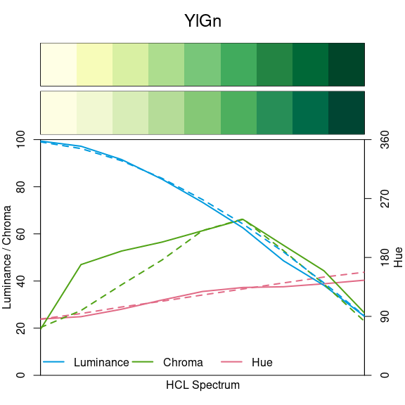
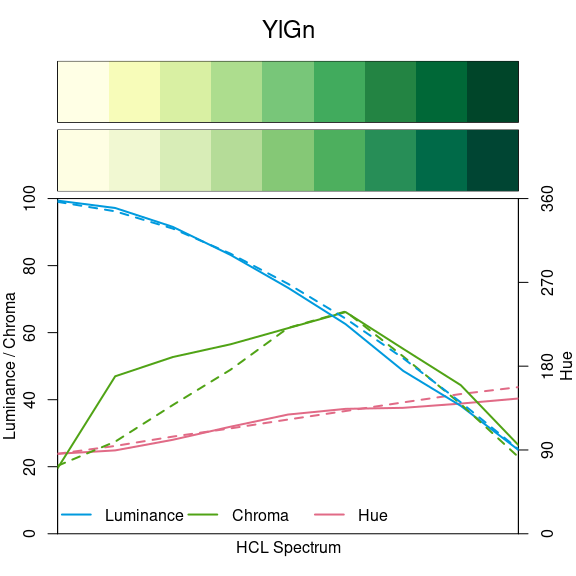


 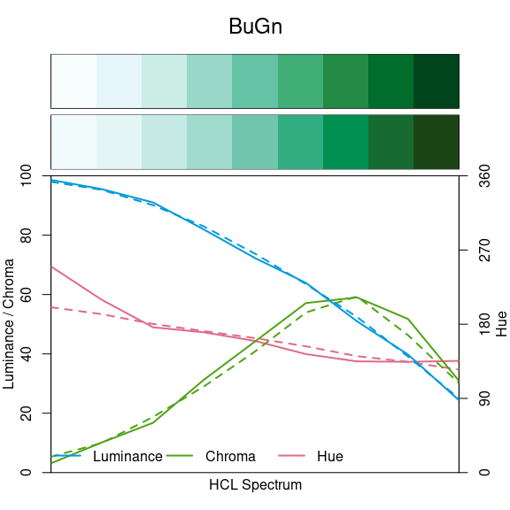
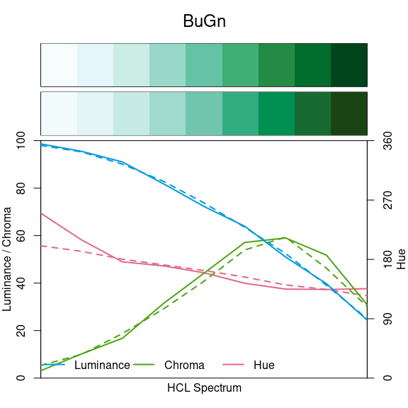 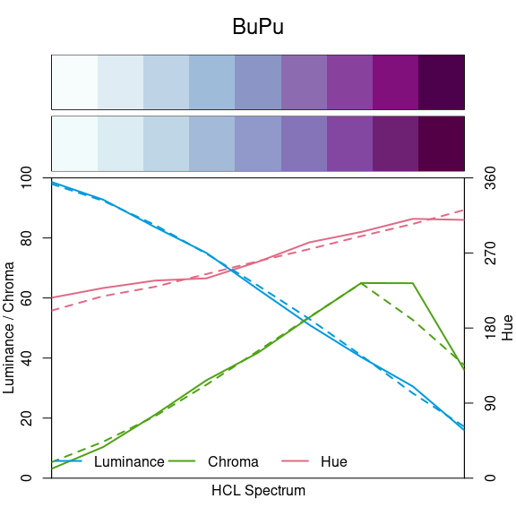
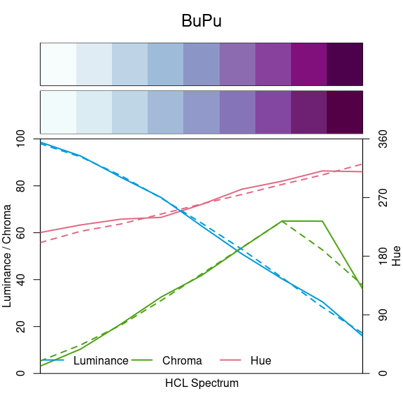


 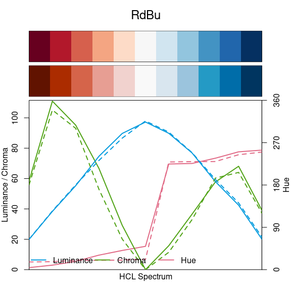
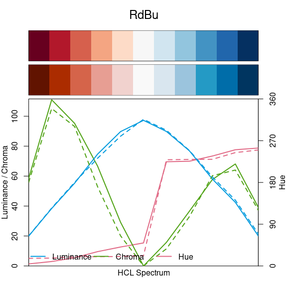


 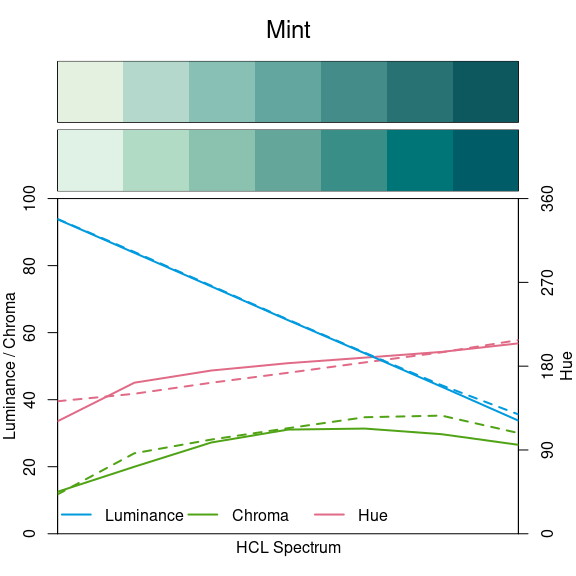
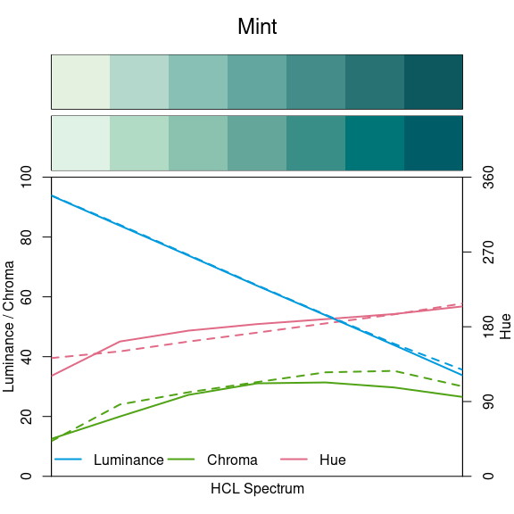


 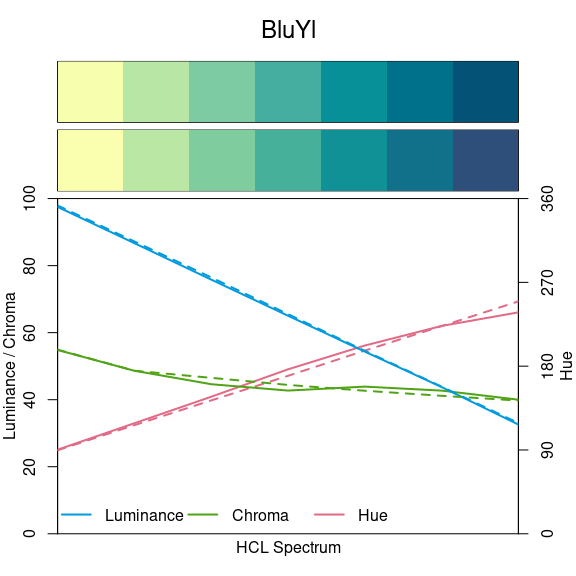
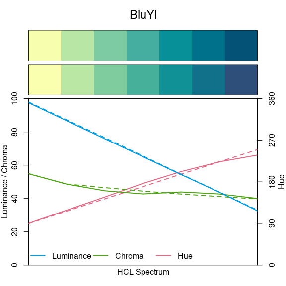

 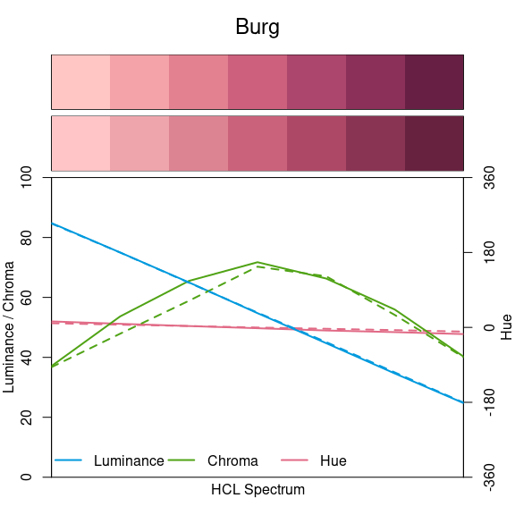
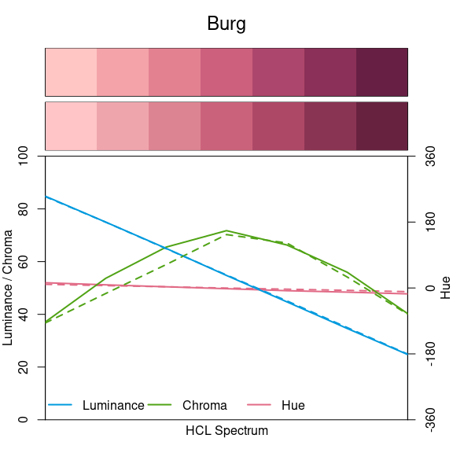


 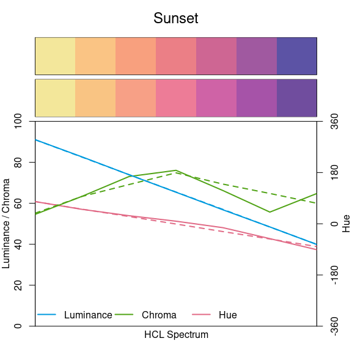
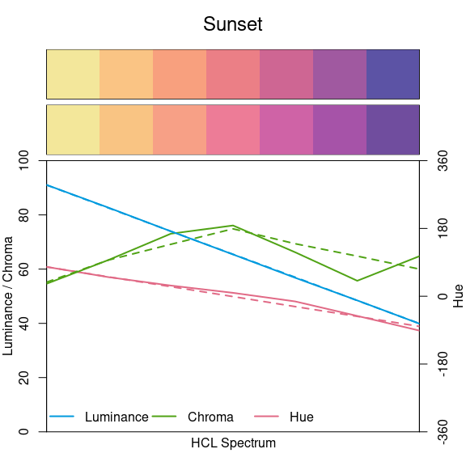


 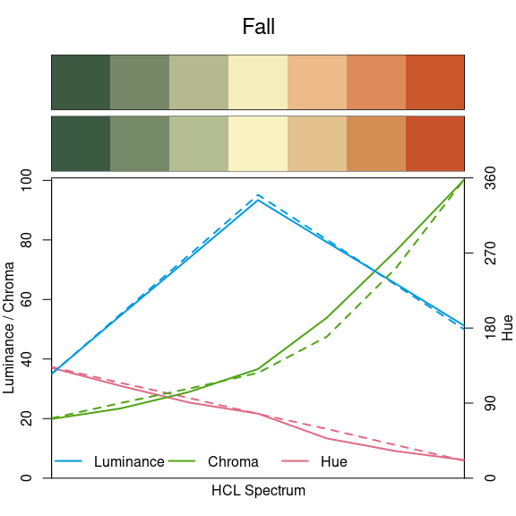
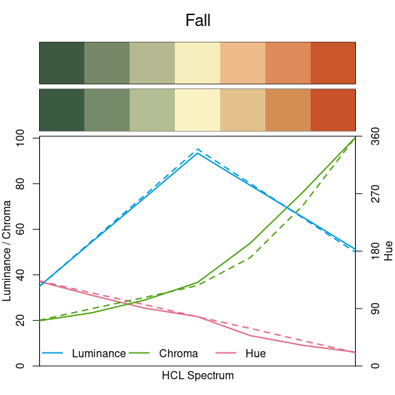

 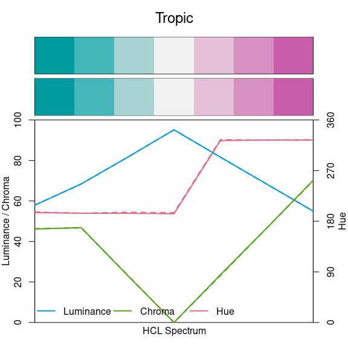
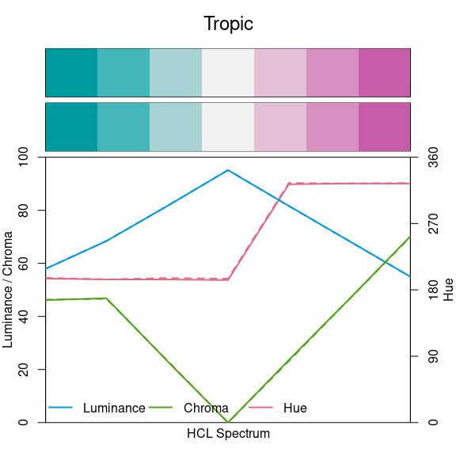

 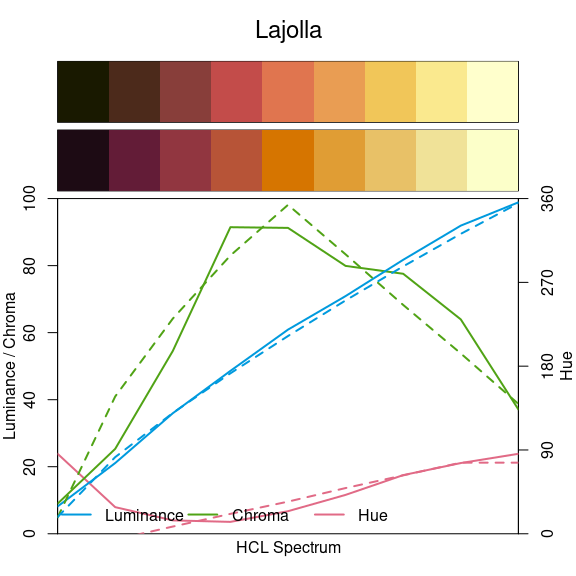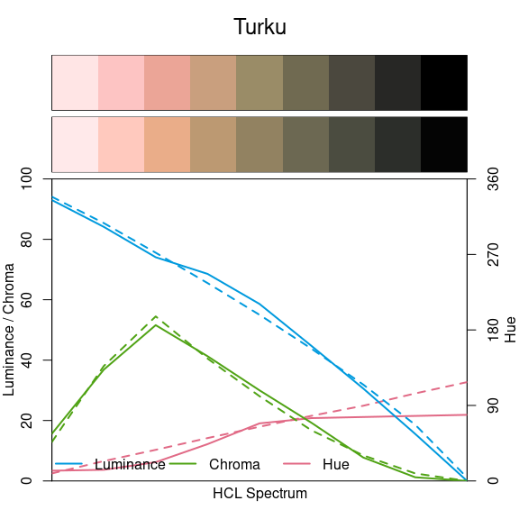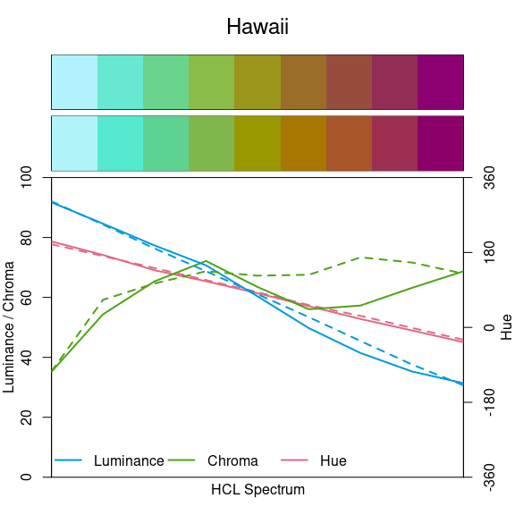
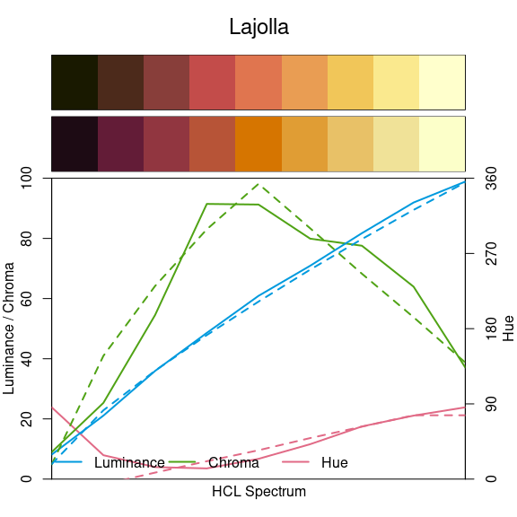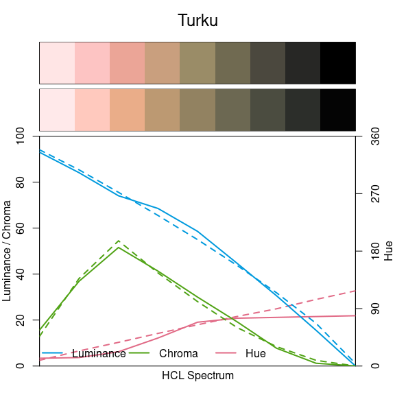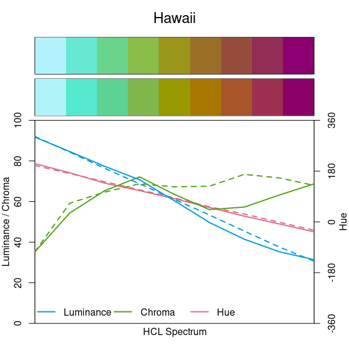


References
CARTO. 2018. “CARTOColors – Data-Driven Color Schemes.” https://carto.com/carto-colors/.
Crameri, Fabio. 2018. “Geodynamic Diagnostics, Scientific Visualisation and Staglab 3.0.” Geoscientific Model Development 11 (6): 2541–62. https://doi.org/10.5194/gmd-11-2541-2018.
Garnier, Simon. 2018. Viridis: Default Color Maps from Matplotlib. https://CRAN.R-project.org/package=viridis.
Harrower, Mark A., and Cynthia A. Brewer. 2003. “ColorBrewer.org: An Online Tool for Selecting Color Schemes for Maps.” The Cartographic Journal 40: 27–37. http://ColorBrewer.org/.
Neuwirth, Erich. 2014. RColorBrewer: ColorBrewer Palettes. https://CRAN.R-project.org/package=RColorBrewer.
Nowosad, Jakub. 2018. Rcartocolor: “CARTOColors” Palettes. https://CRAN.R-project.org/package=rcartocolor.
Pedersen, Thomas Lin, and Fabio Crameri. 2018. Scico: Colour Palettes Based on the Scientific Colour-Maps. https://CRAN.R-project.org/package=scico.
Smith, Nathaniel, and Stéfan Van der Walt. 2015. “A Better Default Colormap for Matplotlib.” In. Austin. https://www.youtube.com/watch?v=xAoljeRJ3lU.